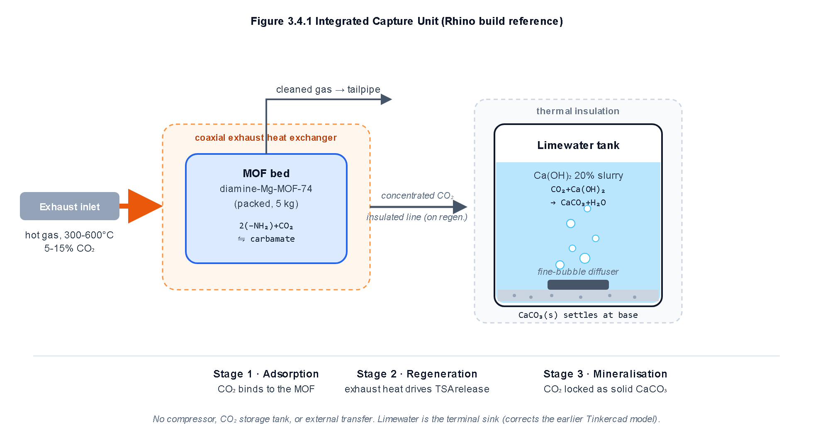
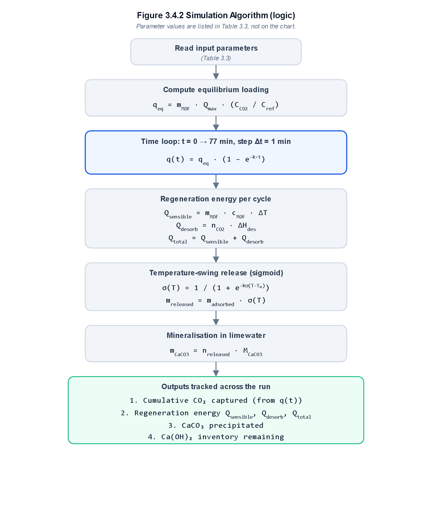

Onboard Vehicular Carbon Capture and Mineralization Platform
Eliminating high-pressure compressed gas cylinders through solid-state diamine-MOF chemisorption, sensible exhaust waste heat regeneration, and ambient calcium carbonate mineralization.
The Three Fatal Flaws of Conventional Vehicular Capture
Passenger vehicles emit over 3 billion tonnes of CO2 annually. While onboard carbon capture has been proposed, historical concepts fail to reach commercial deployment due to fundamental physics and safety barriers.
High-Pressure Gas Storage Explosions
Storing captured gaseous CO2 requires compressing gas to 200 - 350 bar. In passenger car collisions, high-pressure cylinders present catastrophic shrapnel and burst hazards. The heavy composite tanks and multi-stage compressors also add over 180 kg of tare weight.
Severe Parasitic Fuel Penalty
Running mechanical gas compressors or cryogenic refrigeration pumps siphons 25% to 35% of the vehicle engine shaft power. Compressing exhaust gas onboard burns so much extra fuel that net environmental savings are drastically diminished.
Volatile and Corrosive Liquid Amines
Liquid absorption systems using monoethanolamine (MEA) require boiling temperatures above 120 - 140 °C. Solvent sloshing during vehicle motion causes erratic contact, tailpipe amine evaporation, toxic aerosol emissions, and severe exhaust pipe corrosion.
The Unpressurized Solid-State Solution
AERO-MOF replaces high-pressure compression with a closed two-stage solid-state process: selective low-temperature chemisorption on a metal-organic framework, followed by ambient limewater precipitation into solid limestone.
Diamine-Appended Mg-MOF-74 Chemisorption
Ethylenediamine molecules grafted to open metal sites in Mg-MOF-74 form stable ammonium carbamate ion chains. This cooperative mechanism yields a sharp step-isotherm with strong uptake at dilute tailpipe partial pressures (13.5% CO2) while completely resisting water vapor displacement.
Waste Heat Thermal Desorption
A counter-flow coaxial exhaust heat exchanger drives sorbent regeneration using sensible exhaust heat (300 - 600 °C). The carbamate bond breaks cleanly between 85 °C and 110 °C. The 1063 kJ thermal duty is delivered in under 55 seconds without any electric heating or battery drain.
Ambient Limewater Mineralization
Desorbed CO2 bubbles into a 30 L tank containing 20 wt% calcium hydroxide slurry at 1.0 bar. Rapid aqueous dissolution and alkaline precipitation turn the gas into inert solid calcite rock (limestone). The solid product is non-toxic, non-hazardous, and permanently stable.
Engineered System Architecture & Fluid Flow
The entire capture and mineralization apparatus is packaged as a compact undercarriage assembly, replacing the secondary muffler while generating negligible exhaust back-pressure.

Figure 1. Detailed engineering layout of the onboard capture and mineralization platform: In-line MOF packed bed, coaxial exhaust heat exchanger bypass, pneumatic diverter valve, and ambient limewater mineralization tank.

Figure 2. Sequential numerical algorithm flowchart showing the time-stepped simulation across adsorption kinetics, waste heat thermal release, and stoichiometric calcite rock precipitation.
Quantitative System Comparison
Comparing conventional mobile carbon capture technologies against the AERO-MOF solid-state mineralization platform.
| Parameter | Compressed Gas Capture | Aqueous MEA Scrubbing | AERO-MOF Platform (This Work) |
|---|---|---|---|
| Storage Phase | Compressed Gas (200 - 350 bar) | Liquid Sump (Corrosive Solution) | Inert Solid Calcite (1.0 bar ambient) |
| Collision Safety | High risk of cylinder shrapnel | Hazardous chemical spill risk | Zero explosion hazard; benign solid rock |
| Regeneration Energy | Mechanical compression pump | Thermal reboiler (120 - 140 °C) | Exhaust sensible waste heat (85 - 110 °C) |
| Vehicle Fuel Penalty | 25% - 35% engine power draw | 18% - 24% engine power draw | 3.07% total fuel penalty |
| Exhaust Back-Pressure | 4.2 - 8.5 kPa | 6.0 - 12.0 kPa | 0.68 kPa (Permissible limit: 10.0 kPa) |
| Wet System Mass | 120 - 180 kg | 85 - 130 kg | 46.0 kg (including 5.0 kg MOF bed) |
Authors and Contributors
Developed collaboratively as an independent conceptual and computational modeling investigation into practical vehicular decarbonization.